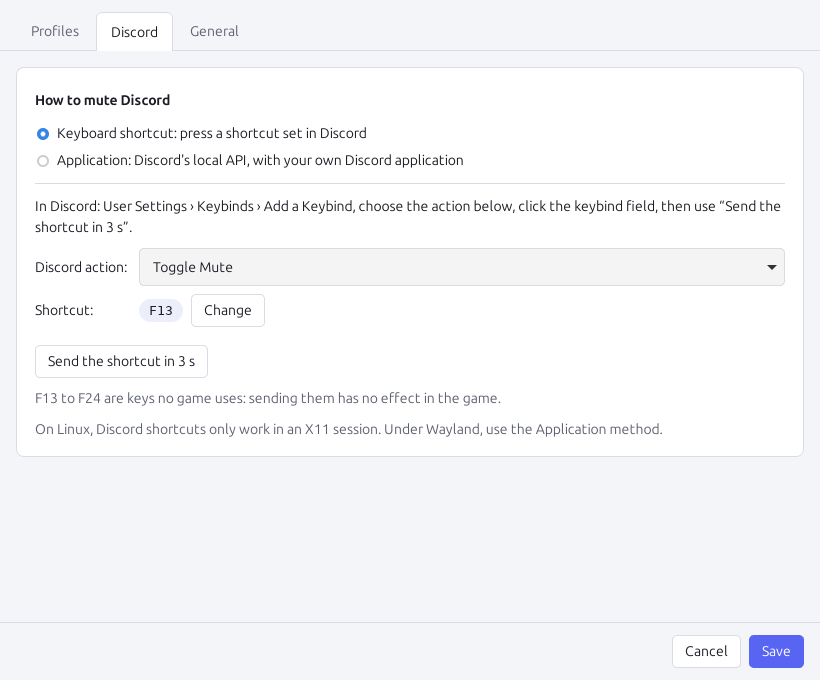
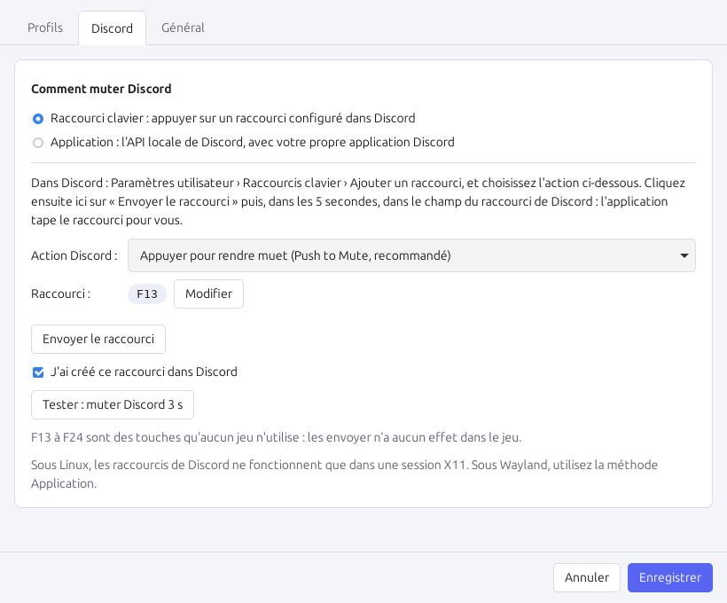

The problem
Le problème
Same friends, two voice chats
Les mêmes amis, deux chats vocaux
Without it
Sans l'application
You talk in the game's proximity or team chat, and Discord sends your voice too: your friends hear you twice, with a delay, and everyone else on Discord hears your in-game conversation.
Vous parlez dans le chat de proximité ou d'équipe du jeu, et Discord transmet aussi votre voix : vos amis vous entendent deux fois, avec un décalage, et tout le salon Discord entend votre conversation en jeu.
With Discord Auto-Mute
Avec Discord Auto-Mute
Hold the game's voice key: your Discord microphone is muted for that time. Release it: Discord is back. Nothing to think about.
Maintenez la touche de chat vocal du jeu : votre micro Discord est coupé pendant ce temps. Relâchez-la : Discord revient. Plus rien à penser.
Getting started
Démarrage
Set up in three steps
Prêt en trois étapes
Install and add your games
Installez et ajoutez vos jeux
Pick your games among 50 presets: their voice key is already set. A game is missing? Create a profile and choose its key.
Choisissez vos jeux parmi 50 préréglages : leur touche de chat vocal est déjà renseignée. Un jeu manque ? Créez un profil et choisissez sa touche.
Connect Discord
Reliez Discord
Add a “Toggle Mute” keybind in Discord: the app types it for you (F13, a key no game uses). Or use Discord's local API with your own Discord application.
Ajoutez un raccourci « Activer/désactiver le micro » dans Discord : l'application le tape pour vous (F13, une touche qu'aucun jeu n'utilise). Ou utilisez l'API locale de Discord avec votre propre application Discord.
Play
Jouez
The app stays in the system tray. A profile only applies while its game is in the foreground: typing a T in a browser mutes nothing.
L'application reste dans la barre système. Un profil ne s'applique que quand son jeu est au premier plan : taper un T dans un navigateur ne mute rien.
Features
Fonctionnalités
Made for the way you play
Pensé pour votre façon de jouer
One profile per game
Un profil par jeu
Several voice keys per game (team, squad, proximity), keyboard keys or mouse buttons 4 and 5.
Plusieurs touches par jeu (équipe, escouade, proximité), touches du clavier ou boutons de souris 4 et 5.
Hold or toggle
Maintenu ou bascule
Muted while the key is held, or each press mutes and unmutes: like the game does.
Muté tant que la touche est enfoncée, ou chaque appui mute et réactive : comme le jeu.
Never stuck muted
Jamais coincé en muet
Alt+Tab, pause or quit gives Discord back. A mute you set yourself in Discord is left alone.
Alt+Tab, pause ou fermeture rendent la parole à Discord. Un mute que vous avez mis vous-même dans Discord n'est pas touché.
English and French
Anglais et français
In your system's language by default; more languages can be added.
Dans la langue du système par défaut ; d'autres langues peuvent être ajoutées.
Updates itself
Mises à jour automatiques
New versions are offered in the tray menu and installed after your confirmation, signed with the project's key.
Les nouvelles versions sont proposées dans le menu de l'icône et installées après votre accord, signées avec la clé du projet.
Windows and Linux
Windows et Linux
Games under Proton are recognised by their Windows executable.
Les jeux sous Proton sont reconnus par leur exécutable Windows.
In the tray
Dans la barre système
See at a glance what Discord hears
Voyez d'un coup d'œil ce que Discord entend


Presets
Préréglages
50 games ready to go
50 jeux prêts à l'emploi
The most played multiplayer games with their own voice chat, with their default voice key. Know a key we don't? Tell us.
Les jeux multijoueurs les plus joués qui ont leur propre chat vocal, avec leur touche par défaut. Vous connaissez une touche qui manque ? Dites-le-nous.
- Apex Legends T
- Arc Raiders Z, B
- Arena Breakout: Infinite Y
- Arma 3 Caps Lock
- Arma Reforger T, Caps Lock
- Battlefield 6 Caps Lock
- Call of Duty: Warzone / Black Ops 7 Z
- Content Warning V · open mic
- Counter-Strike 2 K
- Dark and Darker B
- DayZ Caps Lock
- Deadlock T
- Deep Rock Galactic Z
- Delta Force T
- Destiny 2 T · open mic
- Dota 2 G
- Escape from Tarkov K
- FiveM (GTA RP) N, Left Alt
- Fortnite no key · open mic
- Garry's Mod X, Mouse 5
- GTA Online N
- Hell Let Loose C, V, X
- Helldivers 2 Caps Lock
- Hunt: Showdown 1896 Caps Lock
- Insurgency: Sandstorm K
- Left 4 Dead 2 C
- Lethal Company T
- Lockdown Protocol no key · open mic
- Marathon Y, T
- Marvel Rivals no key · open mic
- Naraka: Bladepoint no key
- Overwatch 2 `
- Payday 2 `
- PEAK V · open mic
- Phasmophobia V, B
- PUBG: Battlegrounds T
- R.E.P.O. V
- Rainbow Six Siege X U
- Ready or Not no key
- Roblox no key · open mic
- Rust V
- Sea of Thieves Left Alt · open mic
- Squad V, B, G
- Team Fortress 2 V
- The Finals Z
- Valorant V, U
- War Thunder Right Ctrl
- Warframe C
- World of Tanks Q
- World of Warcraft `
- Apex Legends T
- Arc Raiders Z, B
- Arena Breakout: Infinite Y
- Arma 3 Verr. Maj
- Arma Reforger T, Verr. Maj
- Battlefield 6 Verr. Maj
- Call of Duty: Warzone / Black Ops 7 Z
- Content Warning V · micro ouvert
- Counter-Strike 2 K
- Dark and Darker B
- DayZ Verr. Maj
- Deadlock T
- Deep Rock Galactic Z
- Delta Force T
- Destiny 2 T · micro ouvert
- Dota 2 G
- Escape from Tarkov K
- FiveM (GTA RP) N, Alt gauche
- Fortnite pas de touche · micro ouvert
- Garry's Mod X, Souris 5
- GTA Online N
- Hell Let Loose C, V, X
- Helldivers 2 Verr. Maj
- Hunt: Showdown 1896 Verr. Maj
- Insurgency: Sandstorm K
- Left 4 Dead 2 C
- Lethal Company T
- Lockdown Protocol pas de touche · micro ouvert
- Marathon Y, T
- Marvel Rivals pas de touche · micro ouvert
- Naraka: Bladepoint pas de touche
- Overwatch 2 ²
- Payday 2 ²
- PEAK V · micro ouvert
- Phasmophobia V, B
- PUBG: Battlegrounds T
- R.E.P.O. V
- Rainbow Six Siege X U
- Ready or Not pas de touche
- Roblox pas de touche · micro ouvert
- Rust V
- Sea of Thieves Alt gauche · micro ouvert
- Squad V, B, G
- Team Fortress 2 V
- The Finals Z
- Valorant V, U
- War Thunder Ctrl droit
- Warframe C
- World of Tanks Q
- World of Warcraft ²
In italics: to be checked in the game. “open mic”: enable push-to-talk in the game's audio settings first.
En italique : à vérifier en jeu. « micro ouvert » : activez d'abord le push-to-talk dans les réglages audio du jeu.
FAQ
Questions
Questions
Is it allowed by Discord and by anti-cheats?
Est-ce autorisé par Discord et par les anti-triches ?
The app only listens to your keys (it never blocks or changes them), presses a Discord keybind or uses Discord's official local API. It does not touch the game's memory or files. We cannot speak for every anti-cheat, though: if in doubt, ask the game's support.
L'application écoute seulement vos touches (sans jamais les bloquer ni les modifier), puis appuie sur un raccourci Discord ou utilise l'API locale officielle de Discord. Elle ne touche ni à la mémoire ni aux fichiers du jeu. Nous ne pouvons pas répondre pour chaque anti-triche : en cas de doute, demandez au support du jeu.
Nothing happens in one particular game
Rien ne se passe dans un jeu en particulier
- Check that the profile is enabled and that its executable is the one in the foreground: start the game, open the settings and pick it from the suggestions.
- Some games use an open microphone by default: enable push-to-talk in the game's audio settings.
- A game started as administrator hides its keys from normal applications: run Discord Auto-Mute as administrator too.
- Vérifiez que le profil est activé et que son exécutable est bien celui au premier plan : lancez le jeu, ouvrez les réglages et choisissez-le dans les suggestions.
- Certains jeux sont en micro ouvert par défaut : activez le push-to-talk dans leurs réglages audio.
- Un jeu lancé en administrateur cache ses touches aux applications normales : lancez aussi Discord Auto-Mute en administrateur.
Windows says “Windows protected your PC”
Windows affiche « Windows a protégé votre ordinateur »
The installer is not code signed yet. On the first download, click More info › Run anyway. Updates installed from the app are checked against the project's update key.
L'installeur n'est pas encore signé. Au premier téléchargement, cliquez sur Informations complémentaires › Exécuter quand même. Les mises à jour installées depuis l'application sont vérifiées avec la clé du projet.
Linux: the app says it cannot read the keyboard
Linux : l'application dit ne pas pouvoir lire le clavier
Keys are read from /dev/input, which works under X11 and Wayland. Run sudo usermod -aG input $USER, then log out and back in. Discord keybinds only work in an X11 session: under Wayland, use the Application method.
Les touches sont lues dans /dev/input, ce qui fonctionne sous X11 et Wayland. Exécutez sudo usermod -aG input $USER, puis fermez et rouvrez votre session. Les raccourcis de Discord ne fonctionnent que dans une session X11 : sous Wayland, utilisez la méthode Application.
What data does the app send?
Quelles données l'application envoie-t-elle ?
None about you. Your keys are only used on your computer. The app talks to the Discord client on your computer, to Discord's servers only for the authorization of the Application method, and to GitHub once a day to look for updates (can be turned off).
Aucune donnée vous concernant. Vos touches ne sont utilisées que sur votre ordinateur. L'application parle au client Discord de votre ordinateur, aux serveurs de Discord seulement pour l'autorisation de la méthode Application, et à GitHub une fois par jour pour chercher les mises à jour (désactivable).
Like it? Give it a star
Ça vous plaît ? Mettez une étoile
A star on GitHub costs nothing and helps other players find the project. You need a free GitHub account, then click the ★ Star button at the top of the project page.
Une étoile sur GitHub ne coûte rien et aide d'autres joueurs à trouver le projet. Il faut un compte GitHub gratuit, puis cliquer sur le bouton ★ Star en haut de la page du projet.
Star on GitHubMettre une étoile sur GitHub